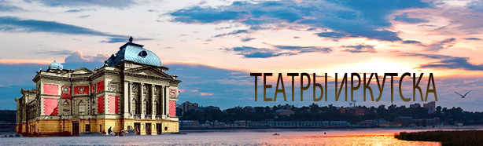

 |
||||||||||
Добро пожаловать на наш сайт! Он поможет Вам узнать много нового и интересного об иркутских театрах. Театры - важная составляющая нашего культурного развития и досуга. Да, многие говорят, что сам театр постепенно сходит на нет. Появляются новые интересы и развлечения, например, компьютер, посредством которого можно получить доступ к любой интересующей нас информации: книгам, фильмам, постановкам. И для этого нам уже не нужно будет идти в театр, стоять в очереди за билетом, тратить свои деньги и так далее. Но театр - это настоящее искусство, его нельзя заменить современными медиа, которые набирают все большую популярность в нашем мире. Наша цель - развить у наших сверстников интерес к данному виду искусства, показать им, насколько важно для их духовного развития посещение этих чудесных мест. Как сказал известный русский писатель Н. В. Гоголь: "Театр - это такая кафедра, с которой можно много сказать миру". И мы согласны с этим высказыванием, потому что именно здесь человек постигает истину. Наш город может гордиться разнообразием театров: драматический, музыкальный, кукольный, театры-студии и так далее. Каждый из них имеет свою историю, которая заслуживает, чтобы о ней узнали. Итак, вы готовы погрузиться в историю развития души нашего города?
|
||||||||||